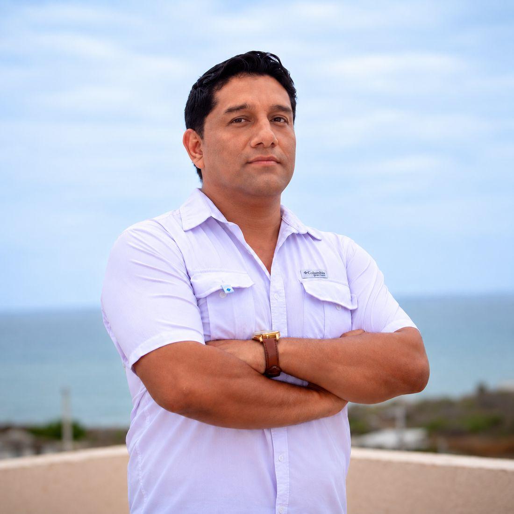
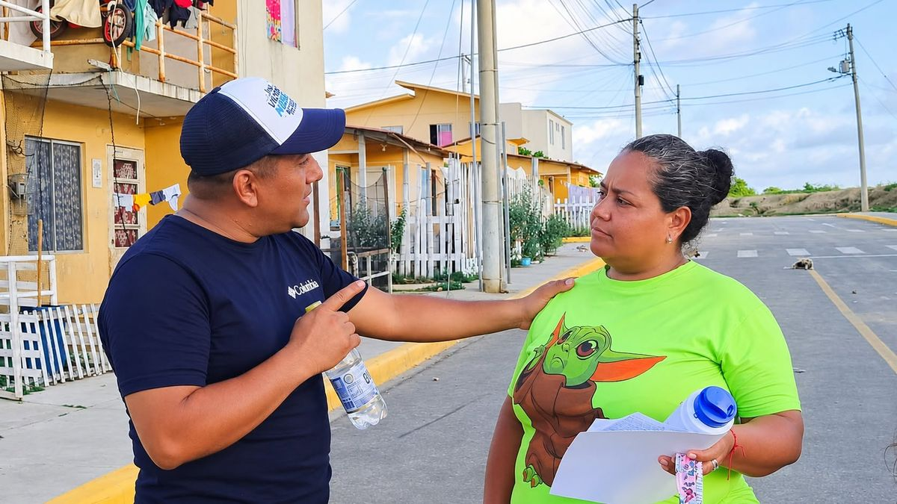
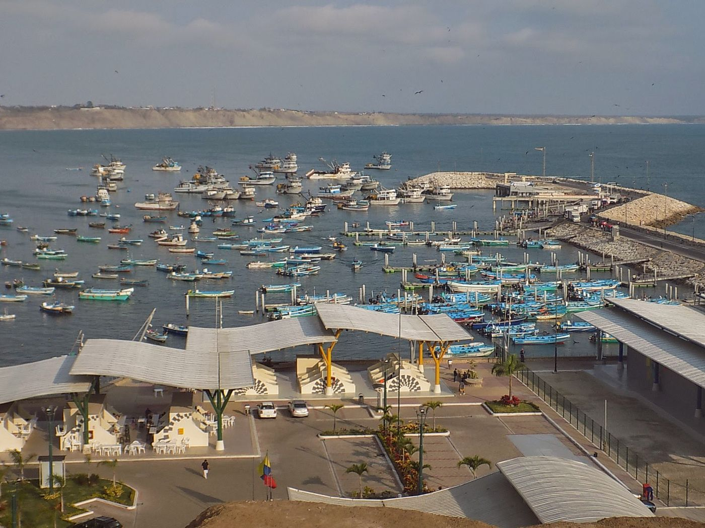
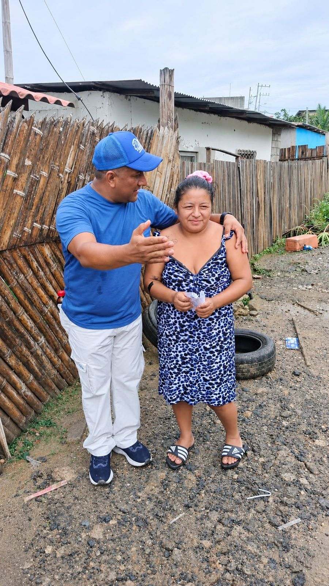
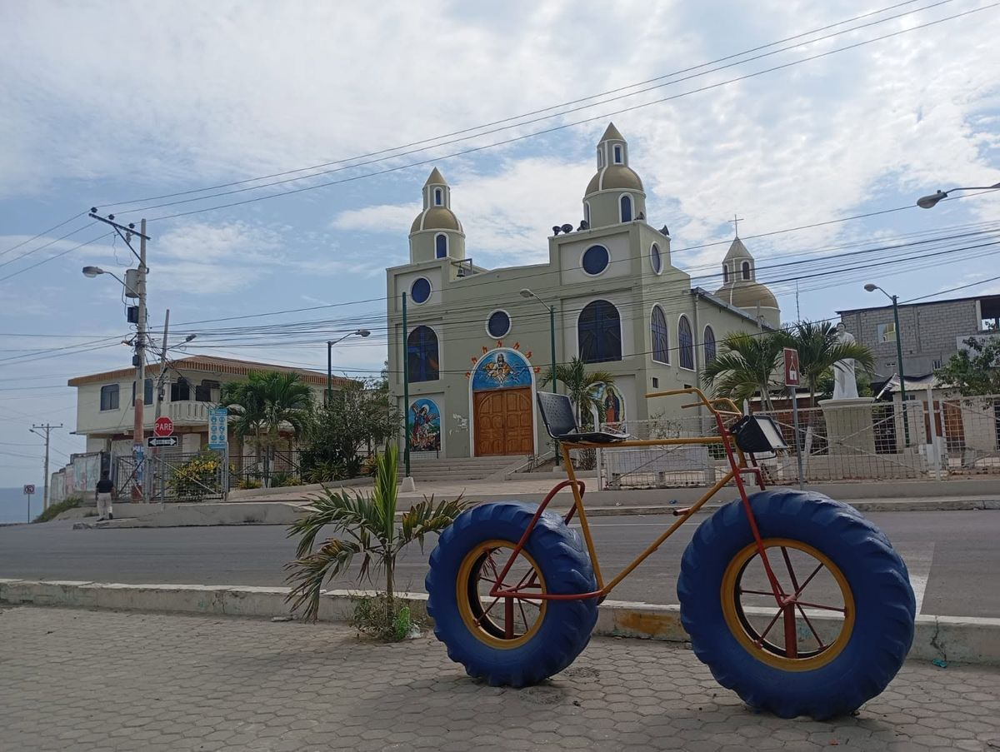
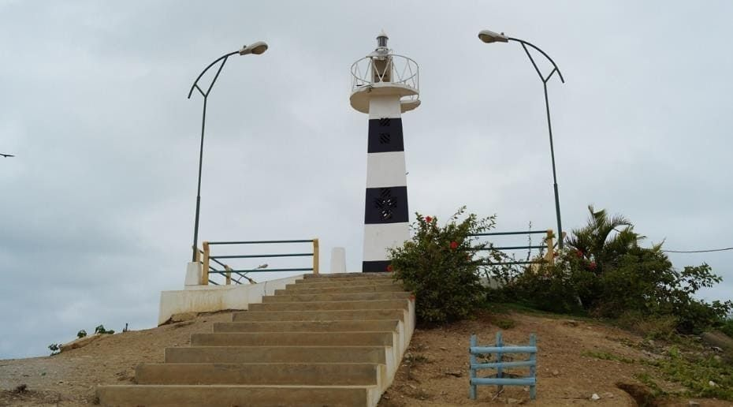
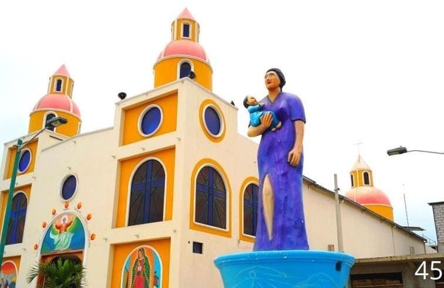

El Mero del Cambio
Cinco ejes de trabajo para Anconcito, explicados claro. Conócelos y decide con información.

El domingo 29 de noviembre se vota de 7:00 a 17:00. Lleva tu cédula original.
Víctor conoce por dentro el trabajo de un gobierno parroquial: planificación, gestión con la comunidad y compras públicas.
Lo que depende del GAD parroquial se hace. Lo que depende de otra institución, se gestiona.
Propuestas para que los jóvenes se capaciten, se organicen y vendan lo que hacen.


Recorridos casa por casa en Anconcito.



